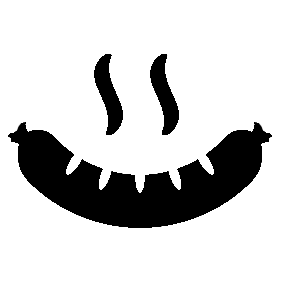
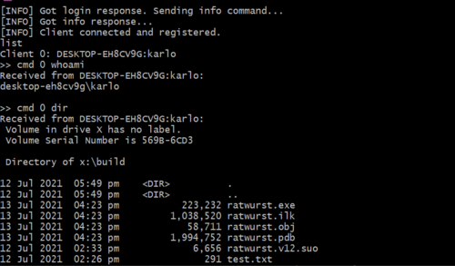

A Remote Access Tool (RAT) is used to remotely access a computer. It has legitimate uses but it can also be used for malicious purposes. I've seen it used in malware I've analyzed and I've always been curious as to how it works.
I was following along the Handmade Hero project 1 when the topic about dynamic DLL loading came up. This is a process of dynamically loading a DLL at runtime which is useful if you want your program to check if a DLL is present in a system before loading it.
Two of the system calls that were discussed were LoadLibrary and GetProcAddress. These were familiar to me as I've seen them used on malware shellcode I analyzed in the past. I later learned that this is also used as an anti-virus evasion technique. I found this interesting.
Having learned how to do runtime DLL loading myself I decided to give it a try. And of course, a RAT is perfect for this.

Planning the RATchitecture
A lot of famous RATs are packed with features like the ability to log keystrokes, take screenshots, and turn on a webcam. I just want mine to be simple and have basic functionality like:
- Execute command line commands remotely
- Download a file to the client
- Exfiltrate data via file upload
You can already do a lot of things even with the above basic functions. You can download a payload to the client, run it via remote command and then upload the results. You can even update the RAT itself using the same process!
As an extra, I also wanted it to be stealthy. I am aware however that this is something that is not easily done. There are myriads of security defenses and I don't think I have the time and energy to have my RAT to be up-to-date with the latest evasion techniques. Having basic anti-debugging and anti-sandbox checks is enough for me.
I've never made a RAT before but thankfully there are a lot of great resources online that helped me a lot:
- ParadoxiaRat is my main resource and has done a lot of the features I wanted to implement.
- DarkRAT is a leaked source code that gave me an idea of how a RAT used in the wild looks like
- VXUnderground's WinAPI tricks taught me that there are alternative ways to do certain things to avoid detection
As for the name of the project, I decided on "RATwurst" after the german sausage, Bratwurst. Don't ask me why. I just thought it's funny that it had the letters RAT in it.

The nitty gRATty details
The client is written in ANSI C because it's the language I prefer. Since I am only targeting Windows I chose MSVC for the compiler. Which is great because it allows me to use Visual Studio for debugging.
The server, on the other hand, is written in Python because I wanted another excuse to practice with it. Choosing Python has been a good choice though because of the excellent low level socket and cmd libraries.
Sockets are used for communication between client and server. I've applied basic XOR obfuscation to the data to mask the traffic. The client and server can handle sending of strings and even executables over the network.
When RATwurst is first executed. It does some anti-sandbox checks via process enumeration. It checks if there are more than 15 processe that are running and if there are virtualization tools present like vmware.exe. It will also setup an auto-run registry entry for persistence. And also move the executable to Windows' temp folder and re-run it from there.
Anti-debbuging checks are littered throughout the code which checks the amount of time it takes to reach from one part of the code to the next. This is used to detect if someone is stepping through the code, increasing the delay between code execution.
When no shenanigans is detected then it'll proceed to work as intended.
For eduRATional purposes only
I've made the source of my project available on Github. The aim is to share what I've learned so that others can learn too.
I am aware of news of RAT authors having been arrested because of their work. They actively sought to gain money from their creation, I, of course, have no such plans.
To make sure that I save myself from any legal problems, I've placed a disclaimer that I am not responsible for any misuse. While I am skeptical that a piece of text would prevent any legal action towards me, I do see other projects having their own disclaimers so I decided to do the same.
I've also submitted my creation to a multi-scanner service like VirusTotal. This would help distribute my RATs signature to anti-virus companies so it can easily be detected when used in the wild.2
A RATisfying learning experience
Making this project has been a lot of fun.
The most useful thing that I learned is the client and server communication via sockets. I've dabbled with it before but only in this project have I actually sent actual data back and forth.
I am also happy that I got to use more Windows APIs. It's fun to play around with what's available and it is opening my mind as to what other things I can make in the future.
And of course, this project has given me a good insight into the techniques used by malware. Learning about them is not enough until you've built one yourself.
-
Handmade here is a project by Casey Muratori where a game is created from scratch live on stream, has been going on for 6+ years, it's awesome ↩
-
Multi-scanners help to easily distribute virus signatures to security services. An opposite to this are "no-distribute" sacnners. More info about this here. ↩